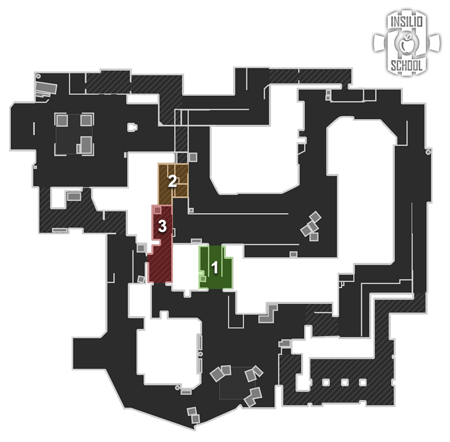
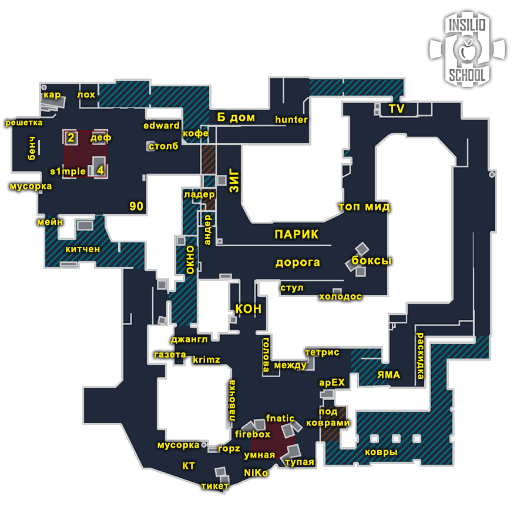
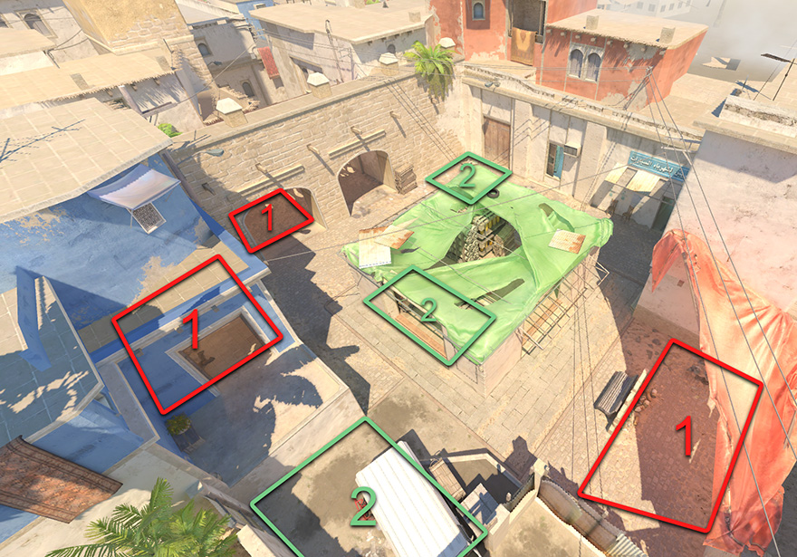

Mirage
Правила, дефолты, роли, комбинации, ретейк и пост-плент
1. Общие правила (атака и защита)
Атака T
| № | Правило |
|---|---|
| 1 | Если у защиты нет AWP, играть контактнее; как вариант, кидать меньше смоков. |
| 2 | На позднем тайминге, после разменов, играть через «центр карты» в контакт, без шума. |
| 3 | Первым играет большинство (кор). |
| 4 | Люркеры должны контачить точки, если кор плохо разменялся. |
| 5 | Бомбу ставить под тиммейта или под зону, из которой пришли. |
| 6 | Когда КТ начал дефьюзить бомбу, считать секунды. |
| 7 | При заходе на точку следить за кучностью; останавливать тиммейта, если он далеко ушёл. |
| 8 | Считать смоки, которые тратит КТ. |
Защита CT
| № | Правило |
|---|---|
| 1 | Последний смок всегда на бомбу. |
| 2 | Ситуации 2в1 играть вместе. |
| 3 | Первым играет большинство (на ретейк). |
| 4 | В меньшинстве нужно что-то делать: вместе пушить или стакать, то есть рисковать. |
| 5 | В большинстве играть от зон, без особого риска, больше на чек/на стрейфе. |
| 6 | Против +W-игроков тратить все антираш-гранаты и пикать в ответ на средних таймингах. |
| 7 | Если под одной точкой агрессия, под другой играть в отдачу. |
2. Правила карты Mirage
Атака на Mirage T

- Зоны для сплита или игры от дефолта, по приоритету: 1) коннектор, 2) ладдер, 3) окно.
- При заходе на А через коннектор AWP забирает КТ, остальные идут по лавочке в сторону фаера.
- При выходе на А давать смок на внешку кона и глубокий молотов в джангл, после чего занять эту зону.
- После установки бомбы грамотно распоряжаться гранатами:
- HE оставить на развей, когда КТ будут давать дым на бомбу.
- Smoke закрывать важные зоны: внешку кона, если вы на А; китчен/окно/мэйн, если вы на Б.
- Flash задержать ретейк, откинув в какую-либо зону, либо оставить на пик тиммейту.
- При дефолте через мид не забывать про подвал: при 1-4 один игрок проверяет подвал по старту; при 1-3-1 либо проверяет, либо с мида кидается молотов в подвал и потом дочекивается.
- Плохо разменялись на миду за Т: начинают играть люркеры на крайних точках.
Защита на Mirage CT
- Если отдаёте мид, нужно взамен отнять зону: яму / ковры / Б дом.
- Если противник отжал мид, то при стяжке через КТ зону окна проходить на шифте: (1) могут услышать из-под окна; (2) в окне может быть противник, который убьёт в движении.
- Опорнику А играть за фаербоксом только если тиммейты держат мид.
- Когда дерёмся за мид за КТ и лежит топ-мид смок от атаки, тратить молотов «за белый» (за ящик), чтобы получить важную информацию.
- Не стоять за смоком в окне после ревила; ротироваться по карте.
- По старту на А начинать с молотова в яму, второй игрок даёт флешки на мид. Если на А старт соло, сначала молотов, потом флешка.
- Если игрок упал в подвал за КТ, нужен игрок в коне, который слушает дорогу и сообщает, если могут запушить.
- Не прожимать Б дом, если тишина на миду и на А.
- Если AWP прыгает на зиг, зиг-игрок стартует с окна (взаимозаменяемость).
- При распике ямы с головы отдавать смок или молотов в ковры (в идеале).
- Не играть против плохого бая в соло на машине после того, как закончились гранаты.
- Не играть против плохого бая в соло на коврах А в упоре за КТ.
3. Термины и основы дефолта
Термины
| Термин | Значение |
|---|---|
| Кор (ядро) | Основная сила команды: 3+ игрока, играющие вместе. |
| Зоны карты | Места, контроль которых в данном раунде и моменте даёт преимущество. |
| 3-1-1 (цифры) | Число игроков под точкой А, на миду, на точке Б (порядок зависит от карты). На Mirage: Б-Мид-А. |
| Контакт | Движение до первого столкновения с противником, при котором издаётся минимум шума и не используются гранаты. |
| Люрк | Игрок, отвечающий за свою зону. Если команда выходит через его зону, он обычно выходит первым; если команда играет через другую зону, он закрывает спину тиммейтам или играет в спину противникам через свою зону. |
| Микро | Контроль своего персонажа: движение, аим, правильное использование гранат. |
| Макро | Понимание ситуации и принятие решений: пассивно или агрессивно, быстро или медленно и т. п. |
Зачем нужен дефолт
Большинство хороших команд играют первые бай-раунды от дефолта, особенно если не знают соперника. Это проверенная тактика, позволяющая не нарваться на заготовки противника. Качественные команды за счёт дефолта переигрывают многих соперников, не показывая скрытый пул заготовок.
Три элемента дефолта
- Старт. Собираем информацию и отжимаем зоны карты, получаем контроль над ними.
- Середина. Принимаем решение (мид-колл), куда идём дальше. Зону к этому моменту уже должны отжать либо вести за неё войну.
- Конец. Постановка бомбы и пост-плент.
Типы дефолтов
Обычный
Играем спокойно, от информации, не торопимся, отжимаем всё под гранаты и работаем вместе. При необходимости реагируем по информации, отменяем план и выходим туда, где соперник даёт минимальное сопротивление. Пример: КТ показывают агрессию на миду (для этого нужно минимум 2-3 КТ); мы просто быстро реагируем в точку, если есть возможность.
Агрессивный
Задача отжать конкретную зону. Даже если узнали, что КТ дерётся за мид, принимаем файт и деремся за нужную зону. Главное — навестись на голову быстрее оппонента. При этом грамотно используем гранаты и двигаемся, а не бежим +W; у нас есть мысль на раунд, которую мы реализуем.
4. Позиции на Mirage


Названия позиций, встречающиеся в материалах: мид, топ-мид, андер, окно, коннектор (кон), ладдер, джангл, КТ, яма / тетрис, тупая, ковры, внешка кона, фаербокс (фаер), зиг, подвал, Б дом, апсы, китчен (кухня), шорт, мэйн, форест, Эдвард, машина, «90», буст-плент, кримз, лавочка, боксы/коробки, Т-респ.
5. Дефолты атаки T
1-3-1
Дефолт через мид, с игроком под А и под Б.
- Занимается мид; выйти за коробки-кран («капля», «холодос»).
- Обновляется дым в окно (лучше перед этим дать молотов).
- Смок топ-кон + флешка.
- Крайние игроки могут играть активно или пассивно; один из них должен дропать смок кору.
- Если КТ активно играют мид, крайним можно рисковать; если мид свободный, играть пассивно.
Меньшинство: если погибли игроки на миду, рисковать крайним и искать контакт. Если умерли крайние, кору на миду реагировать в один из плентов по информации.
2-2-1
Медленный дефолт через мид-ретейк.
- Смок на мид для фона (опционально).
- А-люрк стоит на смоке в окно (готовится бросать), 2 игрока топ-мид, 2 игрока Б дом.
- После первых гранат от КТ даётся смок в окно, и А-люрк идёт заниматься своими делами.
- Топ-мид игроки подходят ближе и ждут, пока раскроется смок.
- Один из Б-апсов пикает андер; когда смок в окне раскрывается, идёт на шифте через андер помогать занимать мид.
Меньшинство: то же, что в 1-3-1.
1-4
Агрессивный дефолт через мид.
- Задача: быстро отжать мид, кон и ладдер (по договорённости).
- Крайнему играть под Б: чекнуть андер на прожим и контролировать точку на прожим.
Меньшинство: собраться в один кулак и выйти в точку. Хорошая опция: сделать буст в окно и начать фонить одну из точек, будучи готовым развернуться и уйти в другую по инфе от забустенного в окне игрока.
2-3 (топ-мид + андер)
- Даётся смок топ-мид; один игрок играет через топ-мид, второй через андер.
- Кор играет в А или Б.
- Основная задача: предугадать активные действия КТ на миду.
- Если соперник отдаёт мид и играет в «Линейку», играем медленнее: щупаем, крутим.
Большинство: то же.
Меньшинство: если погибли игроки на миду, реагируем в точку и пытаемся отжать максимум пространства под плентом. Если погибают игроки в точках, игроки с мида стараются сочиться и занимать окно, джангл, ладдер. Основная задача: унести бомбу с КОРА, если есть возможность.
6. Дефолты защиты CT
1-3-1
Опорники играют под своими точками, три игрока работают на миду (шорт, окно, коннектор).
- Всегда должна лететь флешка от А-опорника; помогающий А тратит свой смок в коннектор.
- AWP свободен: может стартовать не только в окне, но и в КТ-коне-ладдере, либо делать выпад на миду.
Цель: играть от мида (контроль или ретейк).
План Б: отжать пространство под А или Б (в паре).
3-1-1 / 1-1-3
Старт 3 на Б либо 3 на А. В точке, где есть большинство, делается одна из проверенных комбинаций. Представлены три варианта: 3-1-1, 1-1-3 (вар. 1), 1-1-3 (вар. 2).
Раскладки только в видео оригинала.
Цель: отжать пространство под точкой, сыграть на неожиданность.
План Б: ротация и стак одной из точек; если не угадали, то сейв.
2-3 («Линейка»)
- 2 игрока Б играют от Б дома (без шорта) либо от шорта; тогда Б на ретейк, джангл не бьётся.
- Помогающий А играет под коннектором либо на кримзе; 2 игрока А делают одну из комбинаций.
Цель: отдать мид, принять выход в точку.
План Б: прожим одной из точек.
7. Роли на Mirage
Примеры игроков из материала указаны в скобках.
| Роль | Описание |
|---|---|
| Опорник А (flameZ, Brollan, jabbi) | Глава А-корпуса: принимать или отдавать решает он. |
| Опорник Б (jimpphat, NAF, karrigan) | «Качает колёса», но делать это нужно максимально грамотно. Сильный Б-опорник — залог лёгкой победы, как минимум за защиту. |
| AWP (ZywOo, sh1ro, m0NESY) | Окно — не всегда. Сильный снайпер на Mirage имеет 2-3 вариации на каждой точке и чувствует, где стартовать. Агрессивные проходы показаны для А, кона, мида и Б. |
| Кон-игрок (donk, ropz, Twistzz) | Самая файт-роль; нужна хорошая коммуникация, особенно с игроком шорта. |
| Шорт-игрок (frozen, xertioN, Spinx) | Саппорт-роль, много активностей; не забывать про главного друга — Б-опорника. Грамотно оценивать риски. |
8. Парные комбинации за Т и КТ
За Т T
- Дабл-пик ковры. Нужен игрок в яме, который прочекает упор либо даст размен. Идея дуо ковров: быстрый размен и занятие плента, далее КТ.
- Супер-флеш для пика с ковров. Хороший шанс дать энтри под А.
- Базовые флешки под Б для резкого дропа (выход Б под флешки).
- 3 HE под коннектор. Пак гранат против агрессивных КТ. Один из первых способов контроля Донка на Mirage после его успешного турнира; работает безотказно.
- Буст под смок. Хороший шанс дать энтри.
- Буст андер. Контроль перетяжки КТ через джангл; его часто не ждут, особенно если идёт фон под А.
- Сетап для занятия ладдера после дефолта. Глубокий молотов + флешка на врыв тиммейту. То же делается в коннекторе, но намного чаще.
За КТ CT
- Буст фаер. Имба при стаке А на эко с засейвленным ганом. Один игрок играет упор (ковры-яма), чтобы прожать/подобрать ган.
- Флеш под яму. Сетап-флешка, чтобы прочекать зону, занять или прожать дальше.
- Парная игра в апсах. Прожим Б дома под HE, в идеале без гранат, под AWP. Самый безопасный прожим Б дома: в худшем случае играется размен.
- Буст по тени. Свежая информация по Б дому, высокий шанс энтри-килла. Можно попросить двух игроков упасть в андер, тогда прожим Б дома с двух сторон. Работает максимум 1 раз за игру, нужна экономика.
- Резкий выпад мид. Под флешку врывается кон-игрок, два игрока пикаются с шорта (дают флешку и молотов в андер). Хорошо для мид-гейма: ретейк мида и информация по нему. Нужен контроль коннектора.
- Ревил кона под HE. Крутая альтернатива ревилу окна, которого ждут все.
9. Ретейк
Точка А
- Выбивать какую-то из зон, лучше всего через КТ.
- В идеале иметь «противного» на миду либо в спине.
Пример в оригинале: Insilio 11-11 Nemiga.
Точка Б
Откуда быстрее, любая из зон.
- Основная масса через китчен: играть парно, один распикивает, другой ждёт пик с мэйна.
- Через шорт: один игрок берёт файт с форестом или плентом.
- Через Б дом: один играет первым, остальные вторым темпом за ним.
Пример в оригинале: Insilio 13-13 Nemiga.
10. Пост-плент
В скобках — число игроков на позиции.
| Точка | Позиции |
|---|---|
| А | КТ (1), яма-тетрис (2), тупая (2), ковры (2) |
| Б | Эдвард (1), Б дом (1), форест (1), машина (2), «90» (2), буст-плент (2) |

11. Выходы и сплиты (execute)
Выход А T
Раскид А: 4 в яме + 1 на коврах.
- Задача: занять одну из зон, джангл или КТ (чаще КТ), и от неё строить линию выхода; давить либо под голову, либо в плент, затем КТ.
- Игрок с ковров старается лишний раз не падать и играет от своего спота: контролирует врыв в смоки и играет в размен с плентом.
- Хорошо работает против 2 AWP и против форса; против форса лучше выходить 3+2 (ковры), получив хоть какую-то информацию, чтобы не выйти на фулл-стак.
- Отлично против защиты, играющей от мида и тратящей много гранат на мид.
Выход Б (резкий) T
- Очень важны сильные флешки: под тайминг их взрыва искать энтри по опорнику либо игроку шорта.
- Давить за плент, чтобы получить больше спейса в пост-плент ситуации.
- Силён против соперников, играющих упор мид, и команд, у которых AWP не ходит на Б.
Пример из оригинала: NAVI быстро поняли, что опорник играет с шорта, и убили его первым. На большой выборке чаще находится энтри за плентом, если опорник играет на отдачу.
Сплит А T
2 игрока действуют через мид (один андер, второй топ-мид) и фактически играют свой дефолт; тройка играет под А: 2 яма + 1 ковры.
- Первый игрок с мида максимально быстро идёт на КТ под гранаты тиммейтов, чекая упор ямы + ковры.
- Второй игрок с мида играет в размен с первым; если всё хорошо, забирает шорт или ловит КТ-шника, который загулял и играет на бомбу.
- Остальная тройка действует как при раскиде А.
- Работает против команд, спокойно отдающих А-кон (играют в отдачу). Хорошо маскируется, если часто играете дефолт; соперник может не ожидать сплита, если не умеет правильно реагировать за КТ. Если умеет — ваша задача подловить его на этой реакции.
Сплит Б T
- Самый важный момент: игроки с Б дома начинают играть первыми.
- Гранаты (молотовы и флешки) — второй момент: молотовы зонят позиции, чтобы не дочекивать; флешки кидать так, чтобы не слепить игрока с шорта (при правильном тайминге всё хорошо).
- Силён против соперников, которые зажимаются и не собирают информацию. Любые сплиты сильны, если вы умеете играть дефолт: раунды маскируются под дефолтный розыгрыш.